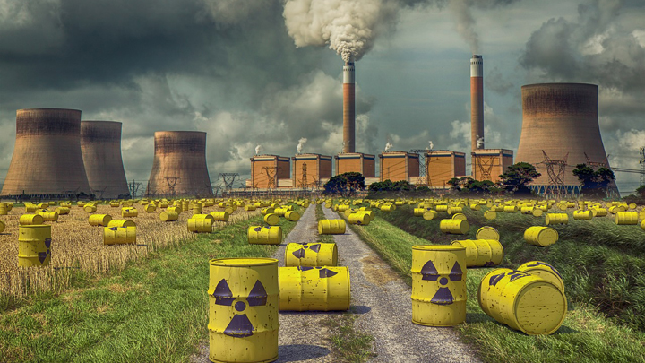

La contaminación es un gran problema que desde hace años provoca un grave riesgo para la salud, afectando a todo el planeta, a su biodiversidad y a la salud de las personas, todo depende de la zona o elemento que se ve afectado y del tipo de agentes contaminantes que producen el problema.
Toda contaminación está causando grandes consecuencias a las que hay que poner solución para esto debemos saber; cuáles son los agentes contaminantes, las consecuencias y las soluciones de este problema global.
La contaminación atmosférica es la presencia en la atmósfera de sustancias, materias o formas de energía que supongan una molestia grave, un peligro o un daño para el ser humano o el medio ambiente.Esa acumulación de gases en la atmósfera ha provocado la aparición de grandes fisuras en la capa de ozono, lo cual ha generado otros fenómenos de notable impacto negativo, como el cambio climático y el calentamiento global. Se puede resumir de la siguiente manera:
Las erupciones volcánicas, donde se emiten tanto gases como partículas (ceniza) que alteran la composición natural de los gases presentes de forma natural en la atmósfera.
Humo y gases de incendios naturales no provocados.
Tormentas de polvo.
Polen y esporas de plantas, responsables de muchas alergias respiratorias.

Se produce cuando en los cuerpos de aguas tanto superficiales como subterráneos se da algún cambio físico, químico o biológico, que tiene un efecto negativo en la biodiversidad que forma parte de estas masas de agua.Podemos mencionar dos tipos de contaminación del agua o acuática:
La contaminación orgánica: debido a microorganismos patógenos en el agua que llegan a través de aguas grises, residuos industriales o agrícolas.
La contaminación con químicos artificiales: esta la generan desde los mencionados pesticidas hasta los medicamentos humanos y para animales o, incluso, cualquier tipo de basura doméstica e industrial.

A pesar de tratarse de uno de los tipos de contaminación menos tangibles, la contaminación acústica nos afecta de manera decisiva al desarrollo y bienestar tanto de los seres humanos como de los demás animales que la padecen.Algunos de los ejemplos más comunes de contaminación acústica los encontramos en las siguientes actividades humanas:
Tráfico: las carreteras y los núcleos urbanos son espacios con un nivel de contaminación acústica muy elevado precisamente al ruido procedente del tráfico rodado, independientemente de que se trata de vehículos de pasajeros o de transporte de mercancías.
Actividad industrial: las diferentes actividades industriales producen un nivel de contaminación acústica considerable. En esta actividad se incluyen desde fábricas manufactureras a actividades de explotación de recursos naturales como las minas.
Locales de ocio: se trata de un tipo de contaminación acústica que se suele localizar en los núcleos urbanos y que está relacionado, sobre todo, con el ocio nocturno, que tiene lugar cuando la contaminación acústica resulta más molesta y perjudicial, que son las horas de sueño.
Estaciones, puertos y aeropuertos: de todos, el tráfico aéreo resulta el más molesto, pero la actividad cercana a los puertos marítimos y a las estaciones también conlleva un alto nivel de contaminación acústica.

Se produce principalmente al usar sustancias radiactivas tanto artificiales como naturales, por el uso de armas nucleares y el uso de la energía nuclear. Este tipo de contaminación supone un gran peligro para la humanidad y la naturaleza, ya que a lo largo de los años son muchos los residuos tóxicos que se han depositado en la naturaleza, destacan causas como:
Actividades industriales para la producción de energía nuclear, como la fabricación de combustibles nucleares o el uso de reactores nucleares en potencia que aprovechan la energía térmica generada mediante el proceso de fisión. Obviamente es una causa muy importante de este tipo de contaminación pues en las centrales nucleares se emite una gran cantidad de sustancias radiactivas a la atmósfera, aunque estas emisiones se encuentran limitadas por la ley. Por otro lado, no solo son un problema estas emisiones, sino que además provoca que las personas se encuentren más expuestas a los radioisótopos que se generan de forma natural en estas industrias, como, por ejemplo, en la minería de radón o de uranio.
Vertido de desechos nucleares en el medio ambiente. Por ejemplo, a través de la refrigeración de los reactores nucleares con agua, que tras ser utilizada se devuelve al mar o al río con su correspondiente contaminación.
Accidentes humanos durante la producción de radioisótopos, como ocurrió en Chernóbil, con la fuga de estroncio-90 que afecta al calcio y a los huesos, o el terremoto y tsunami del Japón 2011. En estos accidentes los elementos radiactivos se esparcieron a través del mar, el suelo y la atmósfera.
Alteración del clima, haciendo que las temperaturas sean cada vez más extremas y las estaciones más cortas.
El desarrollo de fenómenos meteorológicos agresivos como terremotos, huracanes, sequías o maremotos.
La destrucción de la capa de ozono facilitando esto el paso de los rayos ultravioletas que son peligrosos para todos los seres vivos.
Deshielo de las zonas glaciares, como consecuencia se está generando la extinción de la biodiversidad que habita estas áreas. Además, se está produciendo un aumentando del nivel del mar, y como consecuencia esto provoca la pérdida de territorio terrestre.
Todos los agentes contaminantes son un peligro para la salud, y hacen que se den un aumento de enfermedades respiratorias, de enfermedades cardíacas, de casos de cáncer, accidentes cerebrovasculares, o incluso se producen nuevas enfermedades por la aparición de nuevos virus.
Gran aumento de la polución debido al abuso de la quema de combustibles fósiles usado sobre todo en el funcionamiento de las industrias y el transporte de vehículos.
1-Ahorrar agua
2-Separar la basura
3-Reutilizar el plastico que uses
4-Utiliza el transporte público. ...
5-Compra bombillos de bajo consumo. ...
6-Camina en trayectos cortos. ...
7-Apaga tus dispositivos cuando no los uses. ...
8-Desconecta los aparatos.